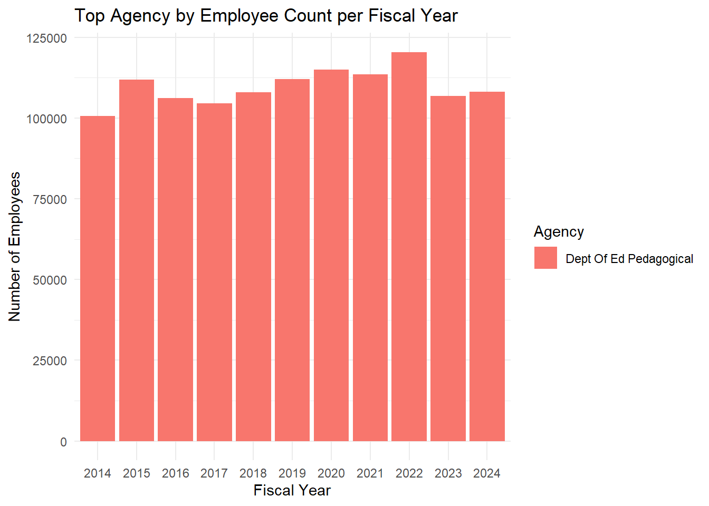
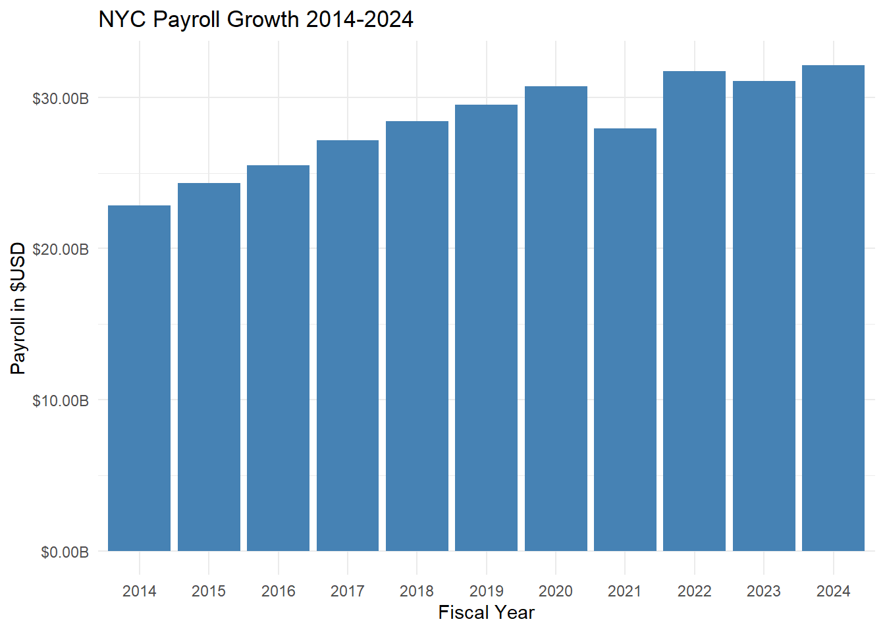
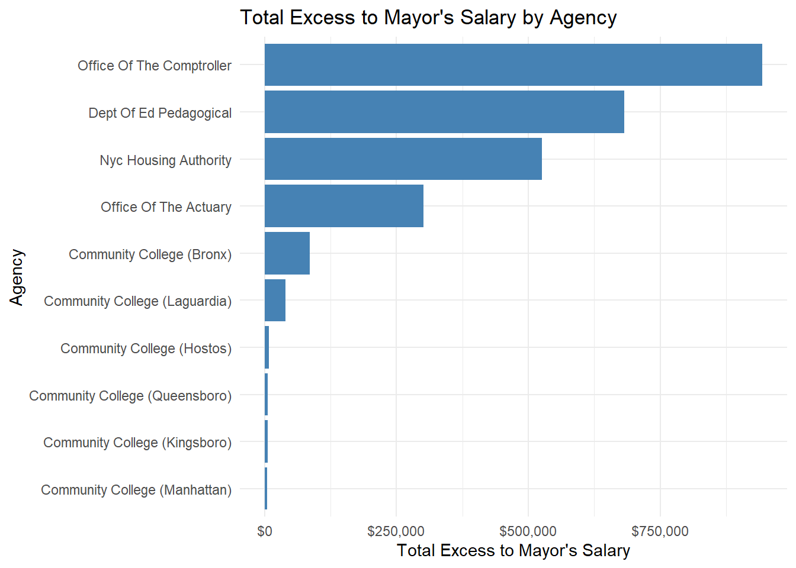
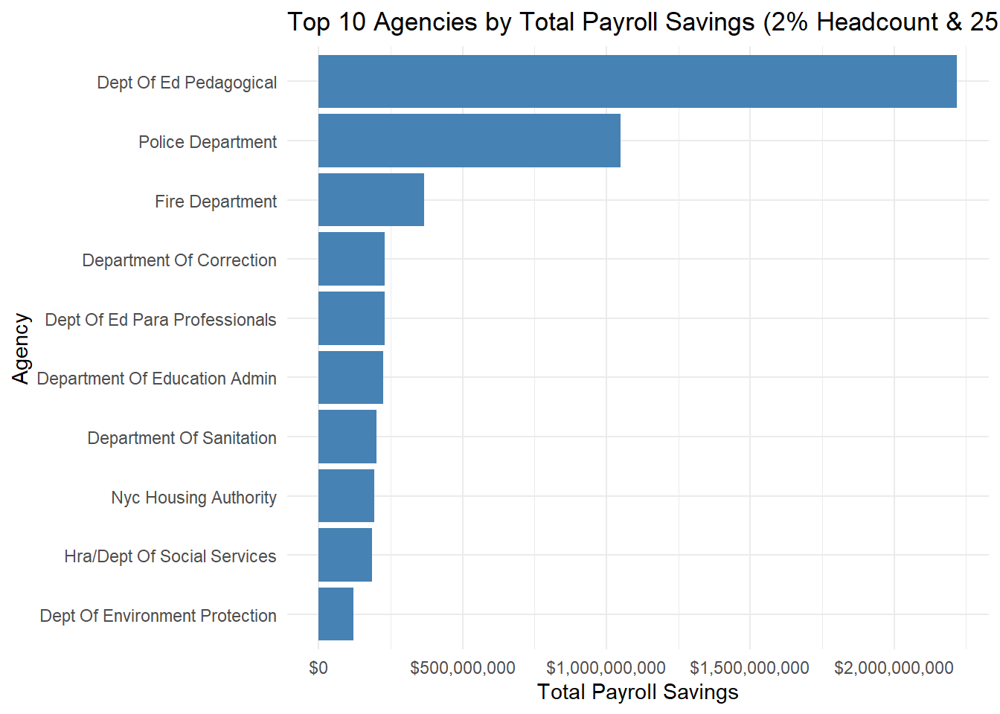

| Fiscal Year | Total Salary | Position | Agency |
|---|---|---|---|
| 2014 | 160000 | Borough President | Borough President-Brooklyn |
| 2015 | 160000 | Borough President | Borough President-Brooklyn |
| 2016 | 179200 | Borough President | Borough President-Brooklyn |
| 2017 | 179200 | Borough President | Borough President-Brooklyn |
| 2018 | 179200 | Borough President | Borough President-Brooklyn |
| 2019 | 179200 | Borough President | Borough President-Brooklyn |
| 2020 | 179200 | Borough President | Borough President-Brooklyn |
| 2021 | 179200 | Borough President | Borough President-Brooklyn |
| 2022 | 437950 | Borough President | Borough President-Brooklyn |
| 2023 | 258750 | Mayor | Office Of The Mayor |
| 2024 | 258750 | Mayor | Office Of The Mayor |
Analysis on NYC Payroll Optimization
Introduction
This report was comissioned by the Commission to Analyze Taxpayer spending. As an incoming technical analyst, I was appointed to investigate several areas of interest that pertained to the way the city handles it’s payroll bill. The following analysis seeks to uncover interesting trends that will aide city stakeholders in their decision making process on how to handle it’s finances. This is followed by several recommended policies that the city wants to undertake, and a third policy underwritten by the team on how New York City can get it’s spending under control.
Eric L. Adams is the current New York City mayor until 2025. Below, we examine his journey from being a borough president in FY 2014 until his ascendancy to become the Mayor of New York City in 2023. His current salary for being Mayor was $258,720 in 2024.
Quick Facts
In this section, we will deep-dive into a few questions that the commissioners had. The following analysis of 8 issues will leverage data from 311 Open Data.
Which job title has the highest base rate of pay?
| First Name | Middle Initial | Last Name | Agency Name | Title Description | Total Pay |
|---|---|---|---|---|---|
| Marek | M | Tyszkiewicz | Office Of The Actuary | Chief Actuary | 349723 |
To begin our analysis, we will look into which ‘job title’ contains the highest base rate of pay. Marek Tyszkiewicz, with the job title ‘Chief Actuary’, at the office of the actuary contains the highest base pay. This is $90,973 higher than Eric L. Adam’s salary.
Which individual & in what year had the single highest city total payroll?
Show the code
library(dplyr)
library(knitr)
library(kableExtra)
# aggregating all of the pay columns
payroll_data <- nyc_payroll |>
mutate(annual_pay = regular_gross_paid + total_ot_paid + total_other_pay)
#empoloyee with highest pay
highest_by_year <- payroll_data |>
group_by(fiscal_year) |>
slice_max(annual_pay, n = 1) |>
select(fiscal_year, title_description, agency_name, first_name, last_name, annual_pay) |>
ungroup()
top_employee <- highest_by_year |>
slice_max(annual_pay, n = 1)
kable(top_employee,
col.names = c("Fiscal Year", "Title Description", "Agency Name", "First Name", "Last Name", "Annual Pay"),
caption = "Highest Paid Employee Overall") |>
kable_styling(bootstrap_options = c("striped", "hover"), full_width = FALSE)| Fiscal Year | Title Description | Agency Name | First Name | Last Name | Annual Pay |
|---|---|---|---|---|---|
| 2024 | Chief Marine Engineer | Department Of Transportation | Mark | Tettonis | 1689518 |
In 2024, Mark Tettonis earned $1,689,518.This is $1,430,768 more than what the mayor earned in the same year.
Which individual worked the most overtime hours in this data set?
Show the code
library(dplyr)
library(knitr)
library(kableExtra)
making_that_money <- nyc_payroll |>
filter(ot_hours == max(ot_hours, na.rm = TRUE)) |>
slice(1) |>
select(fiscal_year, first_name, last_name, agency_name, title_description, ot_hours)
kable(making_that_money,
col.names = c("Fiscal Year", "First Name", "Last Name", "Agency Name", "Title Description", "Overtime Hours"),
caption = "Employee With Most Overtime Worked") |>
kable_styling(bootstrap_options = c("striped", "hover"), full_width = FALSE)| Fiscal Year | First Name | Last Name | Agency Name | Title Description | Overtime Hours |
|---|---|---|---|---|---|
| 2022 | James | Internicola | Department Of Correction | Correction Officer | 3692.9 |
We next wanted to investigate which individuals have worked the most overtime hours the past decade. The view above shows that James Internicola had the most amount of hours logged in a single year by any employee. At an astounding 3,692 hours, and assuming a regular workday is 7.5 hours, James has worked an extra 492 regular days during the fiscal year.
Overtime is a particular area of interest, as hourly wages can become more expensive than salary, leaving room for inflated wages and abuse.
Which agency has the highest average total annual payroll?
Show the code
library(dplyr)
library(knitr)
library(kableExtra)
library(scales)
agency_avg_gross <- nyc_payroll |>
# Calculate total annual gross payroll for all the employees
mutate(annual_gross_pay = regular_gross_paid + total_ot_paid + total_other_pay) |>
# Aggregate data by agency name
group_by(agency_name) |>
summarize(
avg_annual_gross = mean(annual_gross_pay, na.rm = TRUE),
total_employees = n(), #getting count of the total employees
total_gross_pay = sum(annual_gross_pay, na.rm = TRUE),
.groups = "drop"
) |>
arrange(desc(avg_annual_gross)) |>
slice(1:5)
agency_avg_gross <- agency_avg_gross |>
mutate(
avg_annual_gross = dollar(avg_annual_gross),
total_gross_pay = dollar(total_gross_pay)
)
kable(agency_avg_gross,
col.names = c("Agency Name", "Average Annual Gross", "Total Employees", "Total Gross Pay"),
caption = "Top 5 Agencies' average gross payroll") |>
kable_styling(bootstrap_options = c("striped", "hover"), full_width = FALSE)| Agency Name | Average Annual Gross | Total Employees | Total Gross Pay |
|---|---|---|---|
| Office Of Collective Bargainin | $105,563 | 204 | $21,534,797 |
| Financial Info Svcs Agency | $105,437 | 5121 | $539,941,389 |
| Bronx Community Board #3 | $104,195 | 21 | $2,188,093 |
| Fire Department | $100,285 | 209272 | $20,986,772,536 |
| Office Of The Actuary | $98,543 | 498 | $49,074,417 |
The agency with the highest average total annual payroll is the Office Of Collective Bargaining. With 204 employees, they have an average gross total of $105,562.
Which agency has the most employees on payroll in each year?
Show the code
library(dplyr)
library(knitr)
library(kableExtra)
library(ggplot2)
# agency count per year
top_agency_each_year <- nyc_payroll |>
group_by(fiscal_year, agency_name) |>
summarize(num_employees = n(), .groups = "drop") |>
group_by(fiscal_year) |>
slice_max(order_by = num_employees, n = 1, with_ties = FALSE) |>
ungroup() |>
arrange(desc(fiscal_year))
# Table
kable(top_agency_each_year,
caption = "Top Agency by Employee Count per Fiscal Year") |>
kable_styling(bootstrap_options = c("striped", "hover"), full_width = FALSE)
# bar graph
ggplot(top_agency_each_year, aes(x = factor(fiscal_year), y = num_employees, fill = agency_name)) +
geom_bar(stat = "identity") +
labs(
title = "Top Agency by Employee Count per Fiscal Year",
x = "Fiscal Year",
y = "Number of Employees",
fill = "Agency"
) +
theme_minimal()
The Department of Education contains the most amount of employees on payroll per year. The agency has topped over 100,000 employees in the past decade.
Which agency has the highest overtime usage?
Show the code
library(dplyr)
library(knitr)
library(kableExtra)
library(scales)
#agency overtime usage
agency_ot_usage_absolute <- nyc_payroll |>
group_by(agency_name) |>
summarize(
total_ot_hours = sum(ot_hours, na.rm = TRUE),
total_regular_hours = sum(regular_hours, na.rm = TRUE),
.groups = "drop"
) |>
arrange(desc(total_ot_hours))
top_agency_ot_usage <- agency_ot_usage_absolute |>
slice(1)
kable(top_agency_ot_usage,
col.names = c("Agency Name", "Total Overtime Hours", "Total Regular Hours"),
caption = "Agency with the Highest Absolute Overtime Hours Usage") |>
kable_styling(bootstrap_options = c("striped", "hover"), full_width = FALSE)| Agency Name | Total Overtime Hours | Total Regular Hours |
|---|---|---|
| Police Department | 149005878 | 1145700945 |
The agency with the highest overtime usage is the NYPD. From 2014 to 2024 they have accrued 149 million total amount of overtime hours. This indicates that there is an employee shortage and the city should continue to take steps to decrease attrition and increase hiring.
What is the average salary of employees who work outside the five boroughs?
Show the code
library(dplyr)
library(knitr)
library(kableExtra)
library(scales)
# creating copy of dataframe, so that i can filter without having to alter my original dataframe and affect the other questions. (Was having issues when using the original dataframe, unsure why, gpt recommended creating a copy)
nyc_data <- nyc_payroll
temp <- nyc_data |>
filter(!work_location_borough %in% c("Manhattan", "Queens", "Richmond", "Brooklyn", "Bronx") &
!is.na(work_location_borough)) |>
# re-compute annual gross pay
mutate(gross_annual_pay = regular_gross_paid + total_ot_paid + total_other_pay) |>
group_by(work_location_borough) |>
summarize(avg_salary = mean(gross_annual_pay, na.rm = TRUE), .groups = "drop") |>
mutate(avg_salary = dollar(avg_salary))
kable(temp |> rename(
"All Employees Outside Of NYC" = work_location_borough,
"Average Salary" = avg_salary
)) |>
kable_styling(bootstrap_options = c("striped", "hover"))| All Employees Outside Of NYC | Average Salary |
|---|---|
| Work_location_borough | $50,041.10 |
The average salary of employees who work outside of the five boroughs is $50,041.
How much has the city’s aggregate payroll grown over the past 10 years?
Show the code
library(dplyr)
library(ggplot2)
library(scales)
#Again, needed to make a copy due to compiling issues (GPT)
nyc_data <- nyc_payroll |>
mutate(gross_annual_pay = regular_gross_paid + total_ot_paid + total_other_pay)
#payroll
aggregate_payroll <- nyc_data |>
group_by(fiscal_year) |>
summarize(tot_payroll = sum(gross_annual_pay, na.rm = TRUE), .groups = "drop")
#Without the following scale, the chart on the y-axis would be incomprehensible due to the large values. I needed to convert it to billions.
ggplot(aggregate_payroll, aes(x = factor(fiscal_year), y = tot_payroll)) +
geom_bar(stat = "identity", fill = "steelblue") +
labs(
title = "NYC Payroll Growth 2014-2024",
x = "Fiscal Year",
y = "Payroll in $USD"
) +
scale_y_continuous(labels = label_dollar(scale = 1e-9, suffix = "B")) +
theme_minimal()
Based on the bar chart, the city’s total payroll expenditures have shown a steady upward trend from 2014 through 2024.
Key observations and insights:
- The data indicates that each year’s payroll exceeds the previous year’s(exception of 2021), suggesting both a growing workforce and/or rising compensation levels.
- The increase from 2014 to 2024 is substantial, reflecting a need to deep-dive into the causes of rising costs.
Implications on the budget:
Budgetary Pressures: A rising payroll is straining the overall budget, potentially limiting funds for other projects or services.
Resource Allocation: If payroll continues to grow at this pace, city leaders may need to evaluate staffing levels, operational efficiency, and long-term financial planning to ensure sustainability. A deep dive into some policies that we will explore for better financial sustainbility will be shown below.
Policy Analysis
Policy I. Salary Cap
CATS is considering a policy that would ensure no subordinate employee earns more than the mayor. They have tasked us with analyzing the mayor’s total annual pay, identifying employees who exceed that amount, calculating the potential savings if these employees’ compensation were capped, and determining which job titles would be most affected by this policy.
Show the code
library(dplyr)
library(stringr)
library(knitr)
library(kableExtra)
#GPT helped re-code and debug alot of the code in this cell
# getting mayor salary
leader_sal <- nyc_payroll |>
filter(str_detect(title_description, "(?i)mayor") &
(agency_name == "Office Of The Mayor" | title_description == "Mayor")) |>
group_by(fiscal_year) |>
summarize(leader_sal = max(base_salary, na.rm = TRUE), .groups = "drop")
# Find employees earning more than mayor.
sub_excess <- nyc_payroll |>
filter(!(title_description == "Mayor" |
(agency_name == "Office Of The Mayor" & str_detect(title_description, "(?i)mayor")))) |>
left_join(leader_sal, by = "fiscal_year") |>
mutate(excess = if_else(base_salary > leader_sal, base_salary - leader_sal, 0)) |>
filter(excess > 0) |>
select(fiscal_year, agency_name, title_description, base_salary, leader_sal, excess) |>
arrange(desc(excess))
# caluiclating total savings
total_save <- sub_excess |>
summarize(total_save = sum(excess, na.rm = TRUE)) |>
pull(total_save)
cat("Total Savings if capped at the mayor's salary:", total_save, "\n")
# 4. top 10 agencies above mayor salary
top_groups <- sub_excess |>
group_by(agency_name, title_description) |>
summarize(
count = n(),
mean_excess = mean(excess, na.rm = TRUE),
total_excess = sum(excess, na.rm = TRUE),
.groups = "drop"
) |>
arrange(desc(total_excess)) |>
slice_head(n = 10)
# kable
kable(top_groups,
col.names = c("Agency", "Position", "Employee Count", "Mean Excess To Mayor Salary", "Total Excess To Mayor Salary"),
caption = "Top 10 Positions/Agencies Exceeding Mayor's Salary") |>
kable_styling(bootstrap_options = c("striped", "hover"), full_width = FALSE)Show the code
library(dplyr)
library(ggplot2)
library(scales)
#
agency_excess <- sub_excess |>
group_by(agency_name) |>
summarize(total_excess = sum(excess, na.rm = TRUE), .groups = "drop") |>
arrange(desc(total_excess))
#bar graph. Comparing agency and total excess
ggplot(agency_excess, aes(x = reorder(agency_name, total_excess), y = total_excess)) +
geom_bar(stat = "identity", fill = "steelblue") +
coord_flip() + # Makes it horizontal for better readability
labs(
title = "Total Excess to Mayor's Salary by Agency",
x = "Agency",
y = "Total Excess to Mayor's Salary"
) +
scale_y_continuous(labels = label_dollar()) +
theme_minimal()
As we calculated in the beginning of the report, the mayor in 2024 made $258,750. At least 66 employees have made more than the mayor and will be impacted by capping their salaries. Before we move into recommending a cap on all salaries to the Mayor’s, each position must be reviewed on a case by case basis. Although we know that we can save up $2.6 million, there are some critical city agencies such as the Comptroller, Department of Education and New York City Police Department that could have talent gutted if the suggestion is followed.
The first department to scrutinize is the New York City Housing Authority, which shows over $800 million in total excess. This agency, responsible for affordable housing for city residents, has a history of payment abuses; notably, NYCHA Chairman Gregory Russ resigned last year after receiving a salary exceeding $414,000 during his tenure.
Policy I. Recommendations:
Recommendation: Adopt this policy while continuing to assess each job and agency individually, focusing on their essential functions. Additionally, it is advisable to audit the largest agencies and consult independent city employees (those not directly employed by the agency in question) to explore cost-saving measures without the immediate need to impose salary caps. Once this is completed, proceed with implementing the cap.
Policy II. Reducing Overtime
The CATS comissioners have wanted to analyze the potential upside in hiring more employees to reduce the amount of overtime that is paid. It is theorized that the city can save money on total overtime pay with increasing the amount of regular hours work by hiring more employees.
Show the code
library(dplyr)
library(knitr)
library(kableExtra)
library(scales)
# recreating the nyc_payroll salary
nyc_payroll_with_hr <- nyc_payroll |>
mutate(
hourly_rate = case_when(
pay_basis == "per Annum" ~ base_salary / 2000,
pay_basis == "per Hour" ~ base_salary,
pay_basis == "per Day" ~ base_salary / 8,
TRUE ~ NA_real_
)
)
# overtime for employees with ot hrs
overtime_analysis <- nyc_payroll_with_hr |>
filter(!is.na(hourly_rate), ot_hours > 0) |>
group_by(agency_name, title_description) |>
summarize(
total_ot_hours = sum(ot_hours, na.rm = TRUE),
total_savings = sum(ot_hours * hourly_rate * 0.5, na.rm = TRUE),
employees_needed = ceiling(total_ot_hours / 2000),
.groups = "drop"
) |>
arrange(desc(employees_needed)) |>
slice_head(n = 5)
# kable
kable(overtime_analysis,
col.names = c("Agency Name", "Title Description", "Total Overtime Hours", "Total Savings", "Employees Needed"),
caption = "Top 5 Overtime Analysis by Agency and Job Title") |>
kable_styling(bootstrap_options = c("striped", "hover"), full_width = FALSE)| Agency Name | Title Description | Total Overtime Hours | Total Savings | Employees Needed |
|---|---|---|---|---|
| Police Department | Police Officer | 63670892 | 1187266167 | 31836 |
| Fire Department | Firefighter | 43536481 | 864202905 | 21769 |
| Department Of Correction | Correction Officer | 34095332 | 650179743 | 17048 |
| Department Of Sanitation | Sanitation Worker | 23098532 | 415208226 | 11550 |
| Police Department | P.o. Da Det Gr3 | 16211740 | 398057007 | 8106 |
- Over 31,000 NYPD officers are needed to make up for the overtime hours that have been earned over the last 10 years. By hiring them, the city would be able to save over $1 Billion.
Also,
21,679 Firemen
17,048 Correction Officers
11,550 Sanitation Workers
In a recent report by the comptroller’s office, for the FY23 the city spent will reach $740 million.
Policy II. Recommendations:
- Hire more NYPD officers.
- Bring overtime hours under control, by implementing a cap.
It’s hardly surprising that the top five positions and agencies with the most overtime hours are in essential roles. These mission-critical positions require careful evaluation by the city, as excessive overtime spending can deplete city resources, affect employee health, and increase the potential for fraud.
Policy III. Trimming Workforce & Overtime Hours
In the following policy, we will be looking into a strategy into streamlining the cities expenditures in payroll and work towards to balance the books.
Show the code
library(dplyr)
library(knitr)
library(kableExtra)
library(scales)
library(ggplot2)
# Create the unified dataset with total_pay and hourly_rate. ot hours are multiplied by .75 to signify a 25% reduction
nyc_data <- nyc_payroll |>
mutate(
total_pay = case_when(
pay_basis == "Prorated Annual" ~ (regular_gross_paid),
pay_basis == "per Hour" ~ (regular_hours * base_salary) + ((ot_hours * 0.75) * (base_salary * 1.5)),
pay_basis == "per Day" ~ (base_salary * (regular_hours / 7.5)) + ((ot_hours * 0.75) * ((base_salary / 7.5) * 1.5)),
pay_basis == "per Annum" ~ (base_salary + ((base_salary) / 1950) * (ot_hours * 0.75)),
TRUE ~ as.numeric(NA)
)
)
#calculating 2% reduction savings in headcount
data_transformed <- nyc_data |>
group_by(agency_name, fiscal_year) |>
summarize(
total_employees = n(),
avg_payroll = mean(total_pay, na.rm = TRUE),
payroll_savings = 0.02 * (avg_payroll * total_employees),
.groups = "drop"
)
# top 10 agencies
top_agencies_reduction <- data_transformed |>
group_by(agency_name) |>
summarize(
total_payroll_savings = sum(payroll_savings, na.rm = TRUE),
avg_payroll_savings = mean(payroll_savings, na.rm = TRUE),
.groups = "drop"
) |>
arrange(desc(total_payroll_savings)) |>
slice_head(n = 10) |>
mutate(avg_payroll_savings = dollar(avg_payroll_savings))
# Summarize annual savings
annual_savings <- data_transformed |>
group_by(fiscal_year) |>
summarize(total_savings = sum(payroll_savings, na.rm = TRUE), .groups = "drop") |>
mutate(total_savings = dollar(total_savings))
kable(top_agencies_reduction,
col.names = c("Agency Name", "Total Payroll Savings", "Average Payroll Savings"),
caption = "Top 10 Agencies by Payroll Savings (2% Headcount Reduction & 25% Overtime Hours Reduction)") |>
kable_styling(bootstrap_options = c("striped", "hover"), full_width = FALSE)| Agency Name | Total Payroll Savings | Average Payroll Savings |
|---|---|---|
| Dept Of Ed Pedagogical | 2218302021 | $201,663,820 |
| Police Department | 1049718696 | $95,428,972 |
| Fire Department | 367076091 | $33,370,554 |
| Department Of Correction | 229020421 | $20,820,038 |
| Dept Of Ed Para Professionals | 228797067 | $20,799,733 |
| Department Of Education Admin | 224719999 | $20,429,091 |
| Department Of Sanitation | 200285840 | $18,207,804 |
| Nyc Housing Authority | 191879408 | $17,443,583 |
| Hra/Dept Of Social Services | 186253379 | $16,932,125 |
| Dept Of Environment Protection | 121486772 | $11,044,252 |
Show the code
kable(annual_savings,
caption = "Annual Payroll Savings (2% Headcount & 25% Overtime Hours Reduction)") |>
kable_styling(bootstrap_options = c("striped", "hover"), full_width = FALSE)| fiscal_year | total_savings |
|---|---|
| 2014 | $434,976,733 |
| 2015 | $491,278,865 |
| 2016 | $511,118,138 |
| 2017 | $523,886,018 |
| 2018 | $548,739,573 |
| 2019 | $571,509,454 |
| 2020 | $604,393,190 |
| 2021 | $591,990,062 |
| 2022 | $648,409,787 |
| 2023 | $617,324,250 |
| 2024 | $638,163,386 |
Show the code
#bar graph
ggplot(top_agencies_reduction, aes(x = reorder(agency_name, total_payroll_savings), y = total_payroll_savings)) +
geom_bar(stat = "identity", fill = "steelblue") +
coord_flip() +
labs(
title = "Top 10 Agencies by Total Payroll Savings (2% Headcount & 25% Overtime Hours Reduction)",
x = "Agency",
y = "Total Payroll Savings"
) +
scale_y_continuous(labels = label_dollar()) +
theme_minimal()
Policy III Recommendations:
Reduce the Overall Workforce Count by 2% This measure will help streamline operations and trim excess spending on headcount, positioning the city for a more sustainable future. Over a decade this will save an average of over $250 million.
Cut Overall Overtime Hours by 25% By significantly reducing overtime, the city can directly curb inflated labor costs while also encouraging more efficient staffing practices. This is also a push to hire more individuals for key positions to reduce the need for overtime.
Although this policy may be unpopular, establishing firm spending limits is essential to stabilize and improve the city’s financial health. The top 3 city agencies that will be affected the most by these savings; Education, Police & Department can all submit their own reports on where cuts can be made without having to disrupt necessary functions.
Conclusion
This report is a deep-dive into New York City’s payroll bills. From the analysis, we can see that overspending has occured through many agency departments. The city’s stakeholders must throughly assess this report to engage these issues as they have only gotten progressively worse over the 2014-2024 time period.
Key Takeaways
- Many employees earn more than the Mayor, our highest position in the city.
- From 2014 to 2024, the City’s payroll grew over $8 billion.
- Many agencies rely on overtime pay, hinting at staff shortages or avenues of abuse by certain individuals.
- A cost-control mechanism needs to be implemented.
References
Github Co-Pilot
GPT (debugging) For questions 7,8 & Policy I.
Sources
https://comptroller.nyc.gov/newsroom/nypd-overspending-on-overtime-grew-dramatically-in-recent-years/